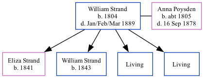

William Strand 1804 - 1889
[ Home ] | [ Calendar ] | [ Surnames Index ] | [ Family History ]William Strand, the husband of Anna Maria Poysden (the four times great-aunt of Nigel Horne), was born in Chislet, Kent, England in 18041,2,3,4,5,6 and married Anna (with whom he had 4 children: Eliza, William, Joseph Thomas and Edwin, along with 2 surviving children) in Sturry, Kent, England on Jun 1, 18338.
William spent all of his life in Kent, England. Throughout his life, he lived in several places around the county: at his birthplace in 18411 and in 18512; in Upstreet, Kent, England on Mar 30, 18519; in St Nicholas-at-Wade, Kent, England in 18613; in Herne, Kent, England in 18714; and at his birthplace in 18815.
He died in Jan/feb/mar 1889 in Dover, Kent, England6,7.
Children
- Eliza was born in 1841
- William was born in 1843
Citations
- 1841 England Census Online publication - Provo, UT, USA: The Generations Network, Inc., 2006.Original data - Census Returns of England and Wales, 1841. Kew, Surrey, England: The National Archives of the UK (TNA): Public Record Office (PRO), 1841. Data imaged from the National
- 1851 England Census Online publication - Provo, UT, USA: The Generations Network, Inc., 2005.Original data - Census Returns of England and Wales, 1851. Kew, Surrey, England: The National Archives of the UK (TNA): Public Record Office (PRO), 1851. Data imaged from the National
- 1861 England Census Online publication - Provo, UT, USA: The Generations Network, Inc., 2005.Original data - Census Returns of England and Wales, 1861. Kew, Surrey, England: The National Archives of the UK (TNA): Public Record Office (PRO), 1861. Data imaged from the National
- 1871 England Census Online publication - Provo, UT, USA: The Generations Network, Inc., 2004.Original data - Census Returns of England and Wales, 1871. Kew, Surrey, England: The National Archives of the UK (TNA): Public Record Office (PRO), 1871. Data imaged from the National
- 1881 England Census Online publication - Provo, UT, USA: The Generations Network, Inc., 2004. 1881 British Isles Census Index provided by The Church of Jesus Christ of Latter-day Saints © Copyright 1999 Intellectual Reserve, Inc. All rights reserved. All use is subject to the
- England & Wales, FreeBMD Death Index: 1837-1915 Online publication - Provo, UT, USA: The Generations Network, Inc., 2006.Original data - General Register Office. England and Wales Civil Registration Indexes. London, England: General Register Office. © Crown copyright. Published by permission of the Cont
- Public Member Trees Online publication - Provo, UT, USA: The Generations Network, Inc., 2006.Original data - Family trees submitted by Ancestry members.Original data: Family trees submitted by Ancestry members.
- England Marriages 1538-1973 - Findmypast
- 1851 England, Wales & Scotland Census - Findmypast (was age 46 and the head of the household)
Family Tree
Generated by ged2site. Last updated on Nov 13, 2024